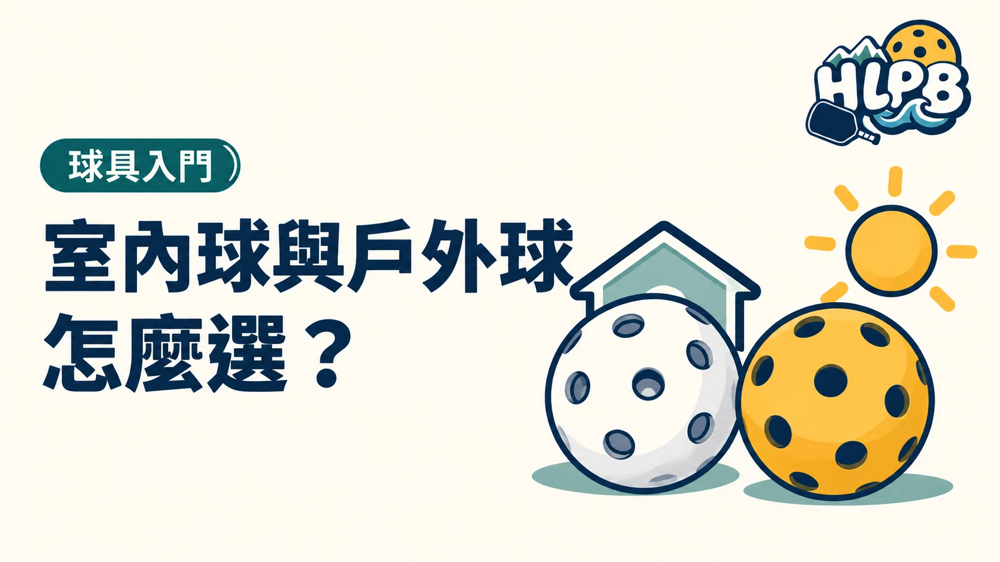

選球先看你在哪種地面打、場地是否受風影響，以及球局用什麼球。「在室內打」不代表所有室內場館都指定室內球。
| 常見設計方向 | 室內球 | 戶外球 |
|---|---|---|
| 孔洞 | 通常較大、較少 | 通常較小、較多 |
| 材質反應 | 常偏柔和 | 常偏硬，考慮戶外環境 |
| 選用時機 | 依產品用途與球局安排 | 依產品用途與球局安排 |
表格是常見方向，各品牌有不同設計，也有兼用產品。孔洞數不是室內／戶外球的絕對分界，不需要硬記成只有兩種固定數量。
購買前，照這個順序確認
- 活動或比賽：先找指定品牌與完整型號。
- 跟團練習：先問主揪與球友常用哪款。
- 自己練習：查產品適用環境，先買少量確認。
換球款時，出球與彈跳感受可能不同。比較球拍時也盡量固定同一款球，避免把球的差異全部當成球拍造成的差別。
有屋頂的花蓮風雨球場仍可能受側風影響，不能只看名稱決定用球。參考場地列表後，再向現場團體確認。
室內或戶外，是產品用途，不只是在說建築
選球時同時看地面、側風與現場安排。室內硬地可能使用戶外球，有屋頂的開放式球場也可能受風影響；不能只看場所名稱就替所有人決定球款。團體已使用特定球時，先和同伴使用相同球款，比各帶一種更容易維持練習條件。
孔洞數可以辨認方向，不能代替完整型號
室內球與戶外球常有不同孔洞配置，但市面也有兼用產品。看到孔洞外觀後，仍要核對品牌的用途與型號。顏色相同、孔數接近，都不代表材質、重量與使用反應一致。準備賽事更應以主辦指定的完整球款為準。
| 使用情境 | 先問的問題 |
|---|---|
| 第一次加入球局 | 現場固定使用哪一款球？ |
| 自己準備練習 | 原廠適用環境是否符合實際地面與風況？ |
| 想比較球拍 | 能否固定同一款、狀態相近的球？ |
| 準備比賽 | 章程或通知指定什麼品牌與型號？ |
換球後打不順，先別急著換拍
把原來與新球款的差異記下來，用相同球拍重新熟悉輕放、擋球與底線回球。不要將所有變化歸因於自己的技術退步，或立即加配重。先固定一個變因，才比較容易理解球和拍各自帶來的感受。以上比較順序為 HLPB 練習建議。
來源：Selkirk 室內與戶外球差異 官方資料 ↗；Selkirk 兼用球說明 官方資料 ↗。資料核對：2026/10/19。
最後查證：2026-10-19｜資料來源：HLPB 編輯整理與正文所列官方資料
返回文章列表